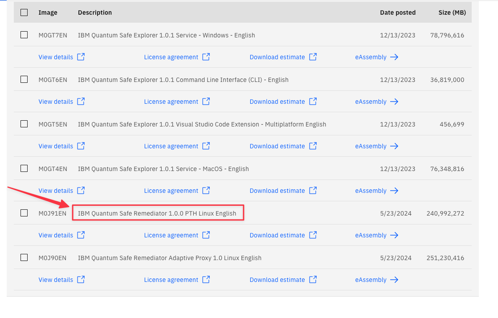

Installation
Performance Test Harness
A lot of info cribbed from here
Pre-Reqs
- Docker
jqbc
Installing pre-requisite packages
sudo dnf -y install jq bcsudo apt-get -y update
sudo apt-get -y install jq bcDownload the Performance Test Pack from IBM Passport Advantage:

The file downloaded will likely be named IQSR_1.0_Linux_EN.zip. Extract the file.
unzip ~/Downloads/IQSR_1.0_Linux_EN.zip
Archive: /Users/kramerro/Downloads/IQSR_1.0_Linux_EN.zip
inflating: M0J91EN/pqc-performance-test_1.0.0.tarUpload the resultant pqc-performance-test_1.0.0.tar to your docker host.
On your docker host
mkdir -p ~/perftest
tar -xf pqc-performance-test_1.0.0.tar -C ~/perftest/Change over to the newly extracted directory
cd ~/perftest/pqc-performance-test/test_utils/build_images/Install the Performance Test Harness
A lot of this stuff is take verbatim from here:
https://www.ibm.com/docs/en/quantum-safe/quantum-safe-remediator/1.0.x?topic=harness-installing-performance-test
Building the images
Execute the build_images.sh script and select 1 when prompted for the License Agreement.
Should show the images available now for Docker
docker images
REPOSITORY TAG IMAGE ID CREATED SIZE
adaptive-proxy ubi-9.3 99c3cd5ad80f 2 months ago 277MB
adaptive-proxy qscopenssl 6609ea524cdf 2 months ago 282MB
localhost:5000/qsc-h2load-provider-22.04.2-1.1.1t 1.0 5a856162a800 8 months ago 427MB
localhost:5000/qsc-curl-provider-9.2.0-1.1.1t 1.0 429552679bba 8 months ago 70.3MB
localhost:5000/qsc-openssl-provider-9.2.0-1.1.1t 1.0 8b69ff2c49da 8 months ago 77MBConfiguring the build images
This build config needs to happen for every host ip you want to check. So if you have multiple addresses, add them to the space delimited list below.
Execute the build_config.sh script. We are going to use our test vm that is running our test site for the adaptive proxy. Since this is running on IBM Fyre, we have two IP addresses available. We’re going to point to both.
Breaking down the below requirements:
TARGET_FQDN_LIST- Should be a space delimited list of ip addresses of the target hostsTARGET_IP_LIST- This should also be the same space delimited list of ips from aboveTESTFQDN- This should be the same ip as the target host
For our test, we will use the ip of our docker host
./build_config.sh
Enter the target FQDN list seperated by space (TARGET_FQDN_LIST): 9.46.72.93
Enter the target IP list seperated by space (TARGET_IP_LIST): 9.46.72.93
Enter the test FQDN (TESTFQDN): 9.46.72.93The build will take a while.
After awhile you should see
Performance test server build completed successfully.
Launching performance test server ...
Launching localhost:5000/qsc-perf-server-ubuntu:provider.
Performance test server container started RC=0, container id 318e77d157114d84915654f86cc8c3a225c689e9983bb9d38fbc6b5cbdefc22d.
Building PQC client container ...
Building PQC client container ...When all is done, you should see the running test harness server container running:
docker ps -a
CONTAINER ID IMAGE COMMAND CREATED STATUS PORTS NAMES
cae3f96543e0 localhost:5000/qsc-perf-server-ubuntu:provider "/bin/bash /opt/ngin…" 29 seconds ago Up 5 seconds 0.0.0.0:9100-9563->9100-9563/tcp, 0.0.0.0:9080->80/tcp, 0.0.0.0:9043->443/tcp qsc-perf-server